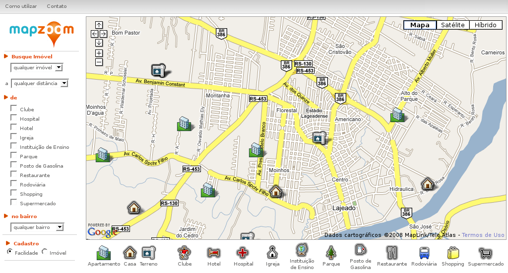
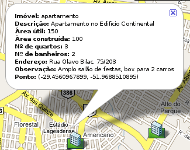
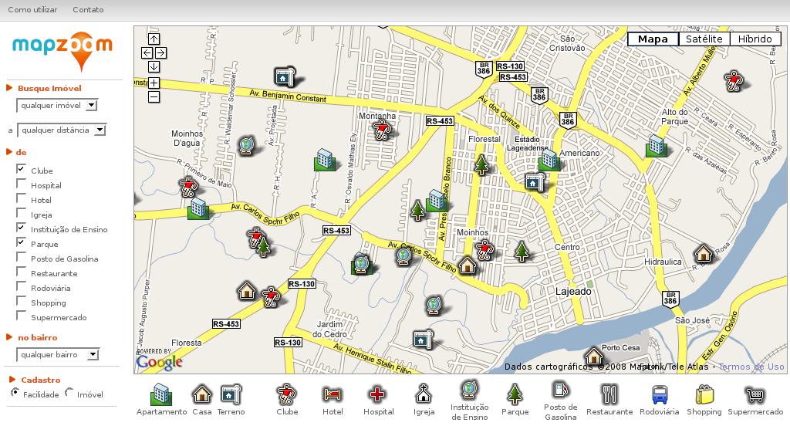
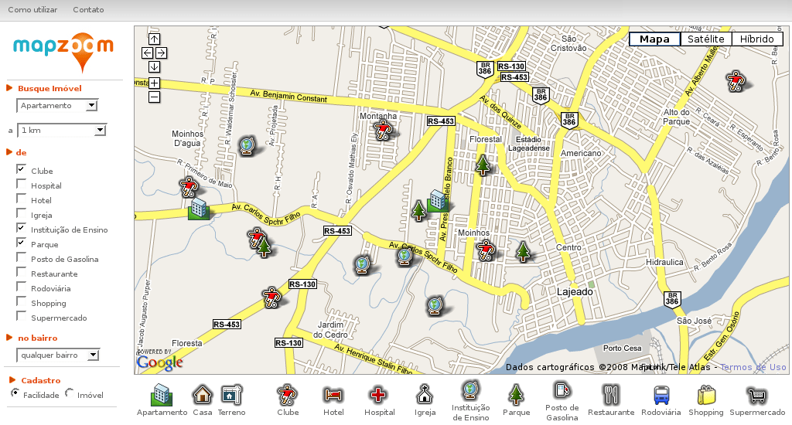
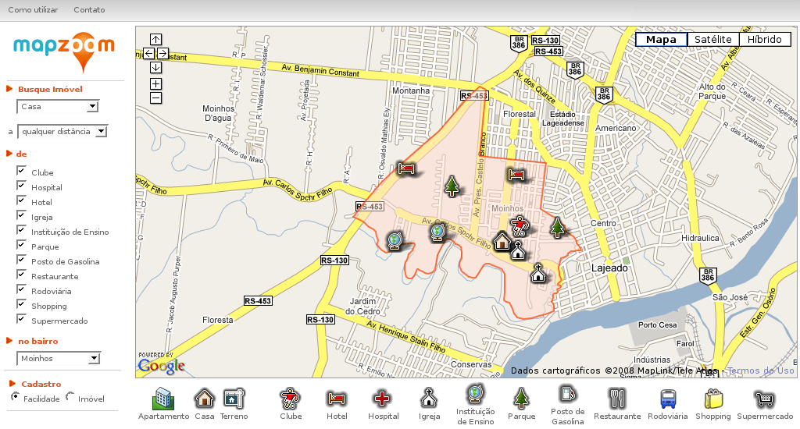
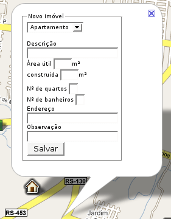
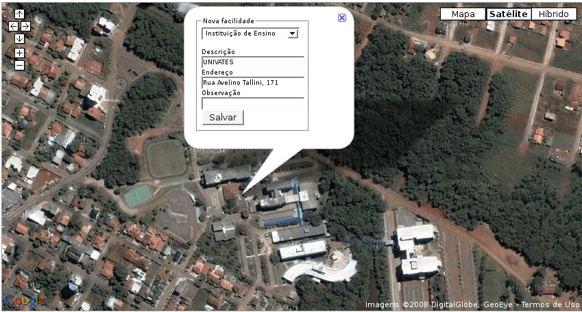

O sistema MapZoom foi concebido de forma a ser o mais intuitivo possível, com o mapa (onde o resultado de todas as buscas será exibido) ocupando a maior parte da tela, um menu de seleções à esquerda e as legendas logo abaixo do mapa, conforme a Figura 1.

Figura 1: MapZoom – Tela principal
A qualquer momento é possível navegar no mapa, movendo sua porção visível com o auxílio das setas posicionadas em seu canto superior esquerdo. Deixando-se o ponteiro do mouse por alguns segundos em cima de cada uma destas setas, um pequeno aviso é exibido, mostrando a função de cada uma delas: mover para cima, mover para baixo, mover para esquerda e mover para a direita. Os sinais + (mais) e - (menos) fazem o controle de aproximação (zoom) do mapa.
No canto superior direito do mapa ainda é possível selecionar formas diversas de visualização: mapa, satélite e híbrido. A visualização "mapa" é a que é exibida por padrão, mostrando um mapa de ruas da cidade. Ao selecionar "satélite", o usuário irá visualizar a imagem de fotos de satélite da região visível (o que será útil no cadastramento de imóveis e facilidades). Podem não existir imagens de satélite para aproximações (zoom) muito grandes de uma determinada região. O modo "híbrido" combina imagens de satélite com o mapa.
Todas as imagens de mapas e satélites são buscadas diretamente dos servidores do Google Maps. Assim, quanto maior o nível de detalhes do mapa, mais demorada pode ser a sua carga. Recomenda-se a utilização da visualização "mapa" como padrão, apenas utilizando as demais quando necessário.
Logo que o sistema é acessado através do navegador, ele irá exibir todos os imóveis cadastrados. Ao clicar em cada um dos imóveis que aparecem no mapa, o usuário obterá informações sobre os mesmos (Figura 2).

Figura 2: Janela de informações sobre um imóvel
Para simplesmente exibir ou esconder determinados tipos de facilidades no mapa, basta clicar na caixa correspondente a elas, marcando-a ou desmarcando-a. A Figura 3 mostra a exibição das facilidades do tipo parque, clube e instituição de ensino, junto com todos os imóveis inicialmente exibidos. Como no caso dos imóveis, ao clicar no ícone de cada uma das facilidades mais informações serão exibidas.

Figura 3: Visualização de clubes, instituições de ensino, parques e todos os imóveis
No caso de se buscar um apartamento para uma família com filhos pequenos, pode ser desejável a proximidade de instituições de ensino, parques e clubes a uma distância máxima de um quilômetro dos mesmos. Esta seleção está ilustrada na Figura 4.

Figura 4: Visualização de apartamentos a até 1 km de Clubes, Instituições de Ensino e Parques
O possível comprador de uma casa deseja que a mesma esteja no bairro Moinhos, mas quer saber também que tipo de facilidades estão disponíveis neste bairro. Esta pesquisa é ilustrada na Figura 5.

Figura 5: Visualização de casa e facilidades no bairro Moinhos
Todas estas buscas podem ser combinadas de acordo com a necessidade do usuário do sistema.
Quando o usuário clica em qualquer ponto do mapa onde não exista nenhuma facilidade ou imóvel, ele acionará uma tela de cadastro. A opção pelo tipo de cadastro é feita abaixo do menu à esquerda (Cadastro de Facilidade ou Imóvel). O cadastro de imóvel permite mais campos do que o de facilidades, como é visto na Figura 6. Caso o clique no mapa tenha ocorrido por engano, basta fechar a janela de cadastro e continuar utilizando normalmente o sistema.

Figura 6: Janela de cadastro de imóvel
Para o cadastro de um novo imóvel ou facilidade, recomenda-se usar a máxima aproximação possível de uma visualização "satélite", para que o ponto cadastrado corresponda (ou esteja o mais próximo possível) da realidade, como mostra a Figura 7.

Figura 7: Cadastrando a UNIVATES como facilidade, na visualização Satélite